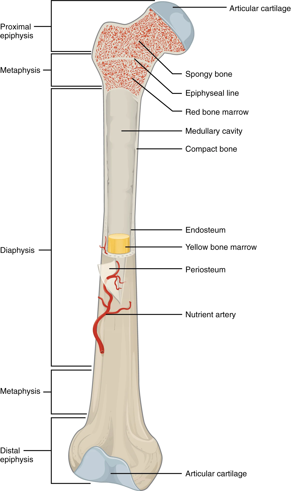
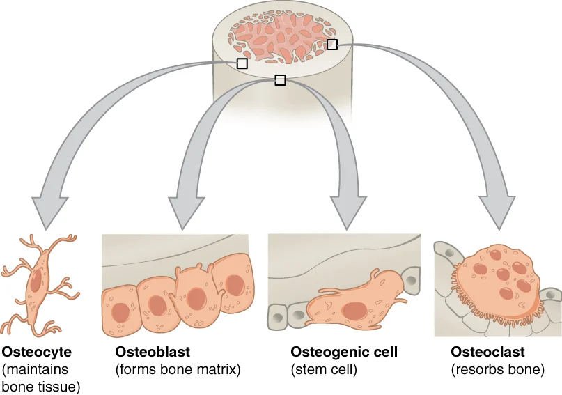

The Skeletal System
TEAS objective S.1.12 · Human Anatomy & Physiology
What the TEAS expects: you can list the functions of the skeleton, describe the parts of a long bone, name the bone cells and what they do, and classify bones and joints.
1. What the skeleton does
- Support and shape for the body
- Protection of organs (skull: brain; rib cage: heart and lungs)
- Movement: bones act as levers that muscles pull on
- Mineral storage: especially calcium and phosphate, released into the blood when needed
- Blood cell formation (hematopoiesis) in red bone marrow
- Fat storage in yellow bone marrow
The adult skeleton has 206 bones, divided into the axial skeleton (skull, hyoid, vertebral column, ribs and sternum) and the appendicular skeleton (limbs plus the shoulder and pelvic girdles that attach them).
Check 1: Which part of the skeleton, axial or appendicular, includes the pelvic girdle? Answer at the bottom of the page.
2. Anatomy of a long bone
- Diaphysis: the shaft. Its wall is thick compact bone; the hollow center is the medullary cavity, filled with yellow marrow in adults.
- Epiphyses: the two ends, made of spongy bone covered by a thin layer of compact bone. The spaces in spongy bone hold red marrow.
- Articular cartilage: smooth cartilage covering the ends where bones meet at a joint.
- Epiphyseal plate (growth plate): a layer of cartilage where a long bone grows in length during childhood and adolescence; in adults it becomes the epiphyseal line.
- Endosteum: a thin membrane lining the medullary cavity.
- Periosteum: a tough membrane covering the outside of the bone; it contains blood vessels and nerves and is where tendons and ligaments attach.

Tap or click the figure to open it full size (in a new tab).
3. Bone cells and remodeling
Bone is living tissue that is constantly broken down and rebuilt.
- Osteoblasts build new bone matrix.
- Osteoclasts break down bone and release calcium into the blood.
- Osteocytes are mature bone cells trapped in the matrix; they maintain it.
- Osteogenic cells are stem cells that become osteoblasts.
Memory aid: osteoBlasts Build; osteoClasts Cut.
Hormones steer remodeling: PTH raises blood calcium by stimulating bone breakdown; calcitonin lowers blood calcium. Weight-bearing exercise strengthens bone; inactivity weakens it.

Tap or click the figure to open it full size (in a new tab).
Check 2: In osteoporosis, bone becomes thin and fragile. Which cells are outpacing which? Answer at the bottom.
4. Classifying bones
| Shape | Example |
|---|---|
| Long (longer than wide) | Femur, humerus, phalanges |
| Short (cube-like) | Carpals (wrist), tarsals (ankle) |
| Flat (thin, often curved) | Skull bones, sternum, ribs, scapula |
| Irregular | Vertebrae, some facial bones |
| Sesamoid (sits within a tendon) | Patella (kneecap) |
5. Joints
Joints can be classified by structure: fibrous (such as sutures), cartilaginous (such as intervertebral discs and the pubic symphysis) and synovial. They are also classified by how much they move:
- Immovable (synarthrosis): sutures of the skull.
- Slightly movable (amphiarthrosis): the joints between vertebrae (with intervertebral discs) and the pubic symphysis.
- Freely movable (diarthrosis), the synovial joints: most limb joints. They have a joint capsule filled with lubricating synovial fluid. Types include hinge (elbow, knee), ball-and-socket (shoulder, hip) and pivot (between the first two neck vertebrae, which lets you turn your head), saddle (base of the thumb), condyloid (wrist, between radius and carpals) and gliding (between carpals).
Common traps
- Mixing up osteoblasts and osteoclasts. B builds, C cuts.
- Thinking all marrow makes blood cells. Yellow marrow stores fat; red marrow makes blood cells.
- Classifying by size instead of shape. The phalanges are small but are long bones.
- Forgetting the skeleton's mineral role. Bone is the body's calcium reserve.
Learn it properly
- Bone structure and cells: OpenStax Anatomy and Physiology 2e, Section 6.3 Bone Structure: OpenStax (opens in a new tab)
- Functions and bone shapes: Section 6.1 The Functions of the Skeletal System: OpenStax (opens in a new tab) and Section 6.2 Bone Classification: OpenStax (opens in a new tab)
- Joints: Section 9.1 Classification of Joints: OpenStax (opens in a new tab)
Check answers
- Appendicular. The girdles attach the limbs, so they belong to the appendicular skeleton.
- Osteoclasts are breaking down bone faster than osteoblasts can rebuild it.
ESCC TEAS Prep · Original study material written for Eastern Shore Community College. Figures from OpenStax, Anatomy and Physiology 2e, licensed CC BY 4.0.